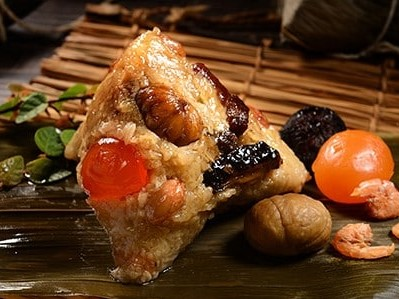
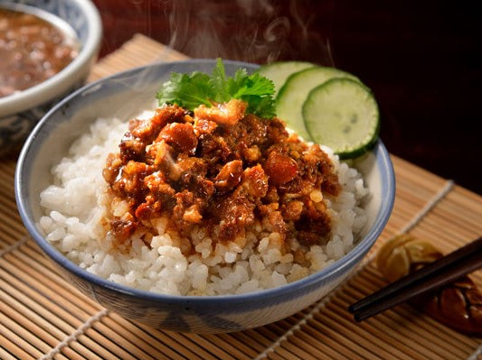
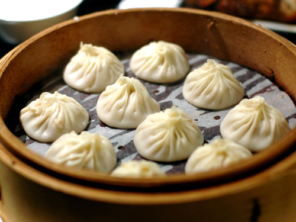
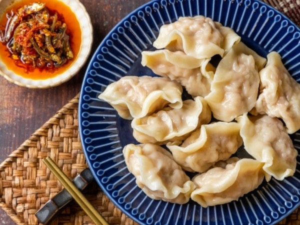
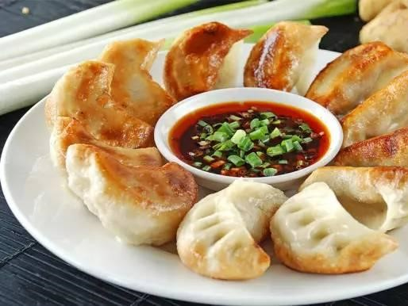
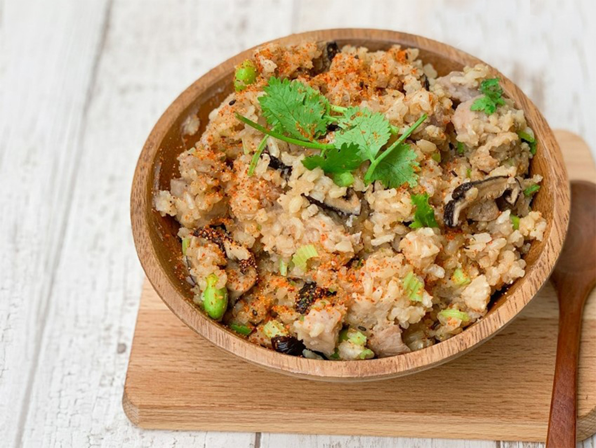
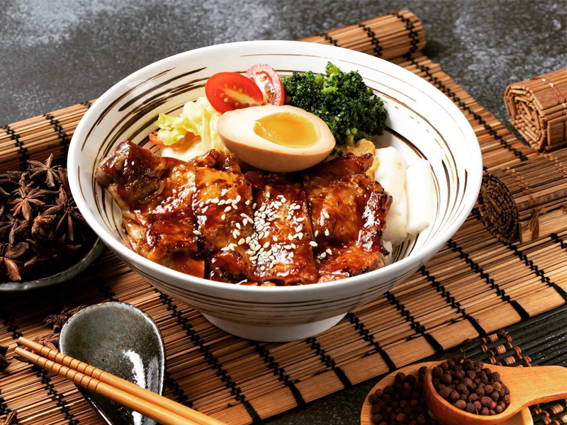
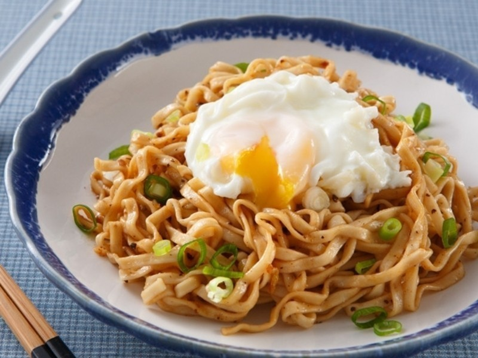

本周人氣排行


美食專欄

料多多便當
必點燒肉淋上醬汁的三層肉，如果喜歡吃瘦一點的燒肉，可以跟老闆說不要太肥的燒肉，他們家的燒肉吃起來帶點酥脆，搭配上沾醬汁很順嘴，也不會太過乾柴，簡單來說就是很熟悉的古早味。

阿皮廣東粥
粥品，一直是我相當喜愛的餐點之一，滑潤順口的米飯，搭配著各式海鮮、肉類。每逢冬天一到，三餐之中來上一碗，不僅暖心也暖胃，香濃的湯頭令人十分滿足。
阿婆筒仔米糕
筒仔米糕可選肥肉或瘦肉，碗中的米糕理所當然地呈現圓柱狀，最上頭蓋著幾片五花肥肉薄片，肥肉就是肥肉，幾乎都是肥的部份，沒什麼瘦肉。然而肥肉切得薄，蒸得透，口感十分軟嫩，幾乎是入口即化卻又不顯油膩，讓人吃了不覺噁心膩口，且份量也適中剛好，再多可能就會讓人感到膩，口味富有層次感，真的非常推薦。

QQ肉粽
剝好的肉粽邊角分明，表面一層光滑感而不顯得黏糊，看起來有點結實， 拿起筷子一分是需要稍微使點力，然而入口一嚼就讓人滿意，或許與這煮粽子的火候掌控也有關係，內裡的糯米軟而不爛，又帶Ｑ勁，粽葉香氣的米粒沾上底部微微鹹甜醬汁就好吃，這醬汁說是加入了炒肉的滷肉汁而成，軟糯口感，適合各年齡層的食客來品嘗。

東東滷肉飯
以往我總說北部的滷肉飯最擅於使用中藥等香料來增添風味，這家算是很典型的，多種中藥搭配得當就會有股難以言明的濃厚味道，尤其像是肉桂就屬裡頭較為突出的滋味，適合喜歡這種多元香氣的朋友，吃起來甘香，鹹度低很順口，與一旁的脆甜酸菜搭配來吃，是還挺不錯的組合。

北門小籠包
小籠包都是現點現做的。湯包的皮非常薄，彷彿一夾就破，但事實上蠻有彈性的，不容易用筷子撮破，還得用牙齒咬一個小洞，蟹粉內餡流出的湯汁呈蟹黃般的黃色，看得到內餡的蟹黃，吃入口中溢出濃郁的蟹粉香氣，還隱隱帶有一點類似咖哩的味道，我想可能是某種香料吧，建議可以沾點李雪油撥辣子，也就是辣油，別忘再加點烏醋，酸辣的沾醬可以消除湯包的膩感，增添不同的風味。

元寶水餃
一顆水餃份量很大，而且水餃吃起來很有嚼勁，水餃裡有滿滿的蔥，吃起來也是令人回味無窮，老闆說他們的水餃大約是36~40克之間，比外面的水餃還要大!!!還說在外面能夠吃到不沾醬的水餃已經很少了!CP值真的很高，推薦大家來吃吃看。

瑞福煎餃
底部煎得比較脆硬，和之前吃的的煎法稍有不同，不過內餡卻是最飽滿紮實的。豬肉和高麗菜比例大約是各半，吃得到豬肉，內餡調味得還不差，畢竟家人從事生水餃販售也很多年，有一定的水準。

簡師傅炒飯
炒飯是中式料理的基本中的最基本，炒飯幾乎人人會炒，但真的要炒的得心順手的真的需要功力跟經驗的累積，推薦這家炒飯，米飯粒粒分明而不乾硬，油香四溢而不膩，調味得宜，當做充飢飽足的一餐，炒飯當之無愧呀!

欣欣越南料理
這家很熱門，如果例假日建議一定要打電話訂位，我們明明就訂位，到現場還是水洩不通又排了一下，還好沒多久就有位置

木村平價丼飯
肉質很好，上面撒了芝麻、蔥花和炸蒜片搭配食用，香氣豐富。若覺得炙烤過後的油脂會膩口，旁邊也有檸檬可以擠。牛腩丼飯的牛腩是切成小塊放進在咖哩之中，不過肉質很嫩，咖哩也因為將蘿蔔和馬鈴薯切成小塊，加上本身就有濃郁的香味，讓整個口感表現很好。

阿山乾麵
乾麵吃起來很有古早味，老闆也很大方地給蔥和香菜，滿滿的香味呀，真令人垂涎三尺，這種調味單純的食物。看似簡單，其好壞真的有天壤之別。個人覺得醋是其靈魂所在，好的醋是酸而不嗆，酸的有層次。還有如果麵甩的不夠乾，麵體容易過於軟爛，口感不佳，而且水份太多也不容易吸醬汁。另外，些許的辣椒也非常有畫龍點睛的效果，讓味道層次更為豐富。
此網頁僅供TibaMe專題教學使用
©All Rights Reserved